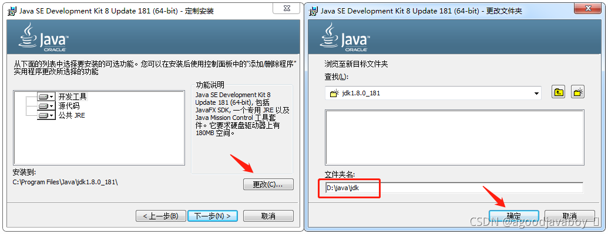
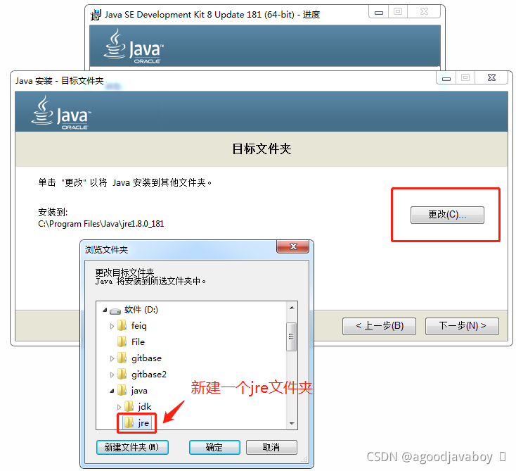
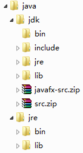
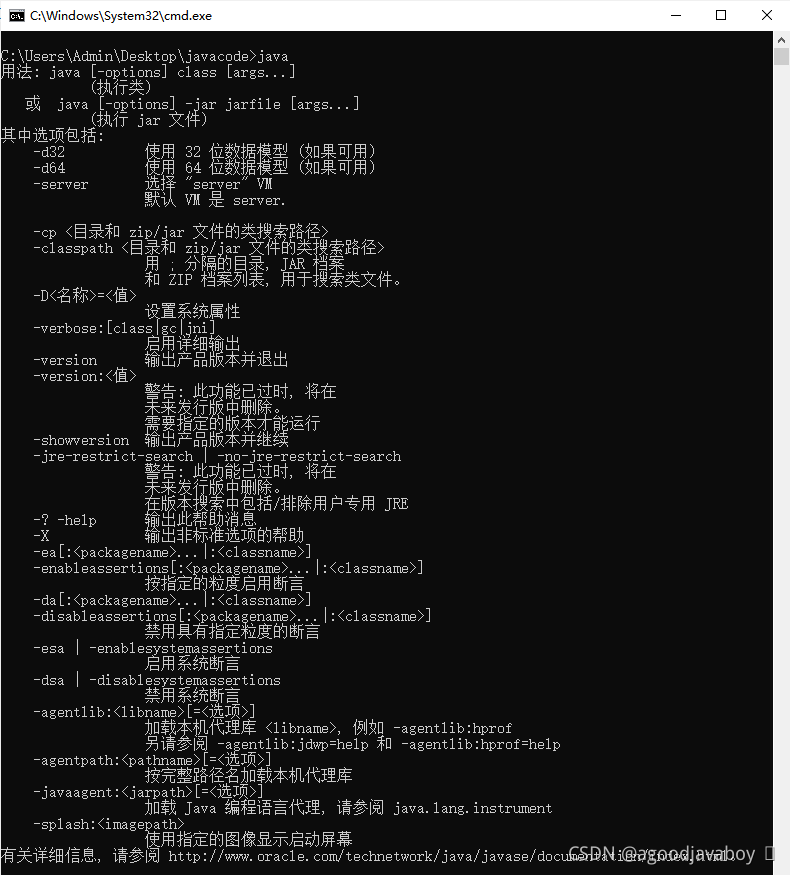
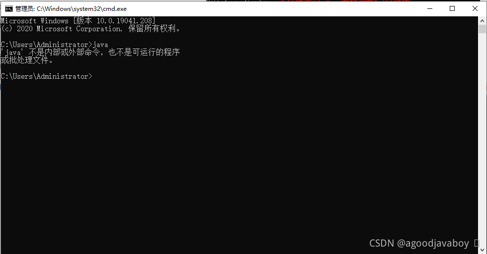
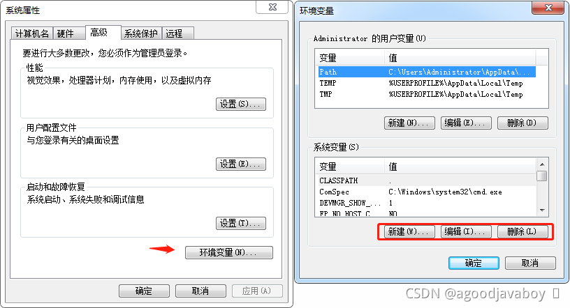
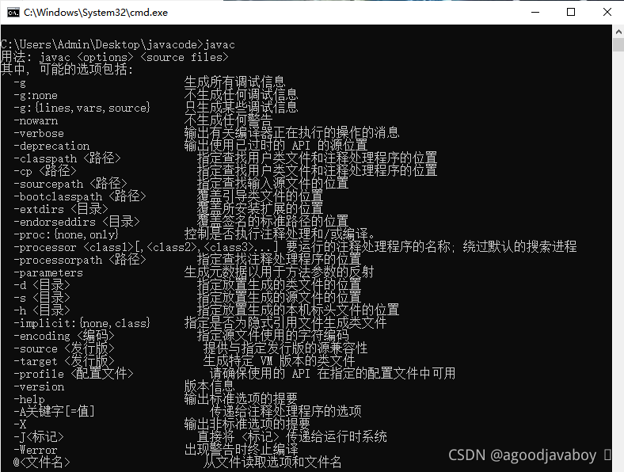
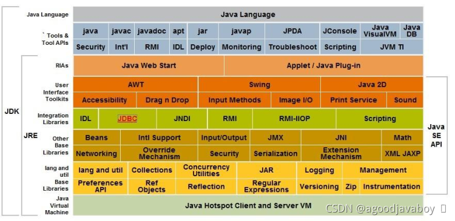

# JDK安装与环境配置
开发Java的Sun公司已经被Oracle收购，关于Java的安装包可以在Oracle官网 (opens new window)下载。Java在不断更新中，但推荐使用Java8版本，因为市面上大多软件开发都采用1.8版本。
以下安装步骤将在Windows环境下进行，Win7和Win10环境中对系统菜单和按钮的寻找大同小异，如果有不明白的区别可以参考网络搜索结果。
# 软件安装
# 检测并去除原Java
在安装Java之前，要先检查计算机中是否存在已经安装的Java，先将曾安装到计算机中的Java卸载，否则同一个计算机中存在两个Java可能会出现冲突。
打开控制面板，调整为“类别”显示模式：
在程序下方，点击卸载程序。右击列表中的软件，将所有与Java相关的软件卸载：
# 安装Java
Java的安装要经历两步，分别是对JDK的安装与JRE的安装：
- JDK：Java的开发环境，包括开发过程中和运行程序时所使用到的类库及其他必要依赖。
- JRE：Java的运行环境，包括运行程序时所使用到的依赖。
首先开始安装的是JDK：双击安装包，并指定JDK的安装路径，推荐不安装到系统盘，但如果修改过安装路径请保持默认目录结构，具体目录结构在第三步介绍：

然后开始JRE的安装，同样指定安装路径，必要安装到JDK文件夹的旁边，具体目录结构可参照第三步：

无论采用默认的安装路径还是自定义的路径，都要保持文件结构目录如下，默认的安装方式将自动构建如下的目录结构，可能文件夹名称不同：

验证安装结果，需要打开系统控制台输入
java查看打印结果是否如下，如果显示指令不存在，则需要重新安装Java：
指令不存在时，将展示如下：

控制台也叫终端，或者命令行，相比较图形化界面直观的操作方式，命令行都是以单词字母组成的命令来控制计算机的各种操作的。命令行的好处是快捷，记住指令之后可以很快的指挥计算机完成操作，而不需要寻找按钮和单独的输入，缺点就是指令的复杂多样化，会增加学习难度。
打开命令行有很多种方式，以下列举几种在Windows中打开命令行的方式。命令行通常会定位到一个路径上，以下几种方式所定位的路径也有所不同：
- Win+R运行cmd打开，定位到当前登录用户文件夹下。
- 文件夹地址栏输入cmd打开，定位到原文件夹路径下。
- 按住Shift并在文件夹或桌面右击，选择打开命令行，定位到右击所处文件夹下。
- 开始菜单搜索cmd打开，定位到当前登录用户文件夹下。
# 配置环境
系统环境变量的作用是在系统运行中提供一些值作为参考，例如启动文件的位置，或者其他软件需要到的值内容等等。Java并没有可视化的界面能够执行，所有的运行都要通过命令行来完成，那就需要在命令行输入指令来执行，这些指令的扫描也要通过环境变量来配置。
找到高级系统设置：
在环境变量窗口中进行参数的编辑：

具体参数配置如下：
变量名 变量值 作用 CLASSPATH（需要新建） .（也就是一个英文的句号） 告诉系统生成的字节码文件放到哪里，点表示当前路径。 JAVA_HOME（需要新建） java中jdk文件夹的路径^路径选择方式 帮助系统中的其他软件，找到java的运行位置。 Path（已有，累加，英文分号与其他内容隔开） java中jdk中bin文件夹的路径^路径选择方式 帮助系统找到java的各个可执行程序。 其中关于
CLASSPATH在高版本的Java中已经忽略，也就是默认就是一个英文的点。但为了严谨和通用，还是建议将三个环境变量都配置上。配置完环境变量后，path变量所指的文件夹中所有的可执行文件都可以通过命令行来运行了，其中常用的就是Java编译指令
javac，可以通过命令行输入此指令来检测环境变量是否配置成功：
首先要保证终端窗口是重新打开的，在配置环境变量前打开的终端并无法加载到变量内容。并且如果输出为javac为未知指令，那则表示path变量并未配置正确，需要进行重新的配置。
实际上在javac所处的文件夹下执行javac指令也是可以的，是因为系统会默认在当前路径下寻找可执行文件。如果在其他文件夹中，也可以通过路径指定的方式来启动可执行文件，但用起来会麻烦一些。配置环境变量的作用就是在系统的任何一个目录下都可以使用可执行文件，并且在未来书写代码的时候也不会指定过长的可执行文件的路径。
在输入一个指令的时候，系统会先判断是否是系统指令，如果不是则在当前目录下寻找，如果目录下没有则在path所指定的各个文件夹中寻找直到运行或报错。那么在进行path路径配置的时候，越靠前的目录会越早被找到，所以可以将java环境尽量向前配置。
因为path变量的前半段就是JAVA_HOME的内容，所以可以将JAVA_HOME的内容作为一个变量应用到path中，在移动了java的安装路径之后，在保证结构不变的情况下，只需要修改JAVA_HOME的地址，path中的路径就将被自动引用，如果采用变量的方式可以将path写为：%JAVA_HOME%\bin;。
# 目录介绍
以下安装路径中的文件夹名称可能因人而异，下文中关于java、jdk、jre文件夹的名称都可能与实际安装名称不同，但除此三个文件夹之外，必须保证其他文件夹名称如下，并无论名称如何命名，文件夹结构必须如下。
# 安装后的目录结构
在软件安装后，在其安装目录中将会出现如下目录结构：

# 各结构作用
java：Java的JDK和JRE的安装目录，也就是软件的根目录；
jdk：Java开发环境所用到的各种依赖和开发包；
bin：Java中能够被系统执行调用执行的软件，例如解释器、编译器等；
include：Java融合进的其他类型语言的文件，用于底层硬件调用等；
jre：开发环境中的运行环境；
lib：编译好的依赖，可在开发过程中直接引用使用；
src.zip：Java提供的所有依赖的源码包，将在未来学习中做参考研究；
jre：Java运行环境所用到的指令和依赖包；
bin：Java在运行程序过程中使用到的运行文件；
lib：运行过程中使用到的程序依赖，与JDK中的lib相同；
2
3
4
5
6
7
8
9
10
11
12
13
14
15
16
17
18
19
# 模块介绍

Java组成模块有很多，但最主要的组成部分可以分为三个：
- JVM：Java虚拟机是一种用于计算设备的规范，它是一个虚构出来的计算机，是通过在实际的计算机上仿真模拟各种计算机功能来实现的。引入Java语言虚拟机后，Java语言在不同平台上运行时不需要重新编译。Java语言使用Java虚拟机屏蔽了与具体平台相关的信息，使得Java语言编译程序只需生成在Java虚拟机上运行的目标代码（字节码），就可以在多种平台上不加修改地运行。JVM将负责调度和协调系统资源来运行Java程序。
- JRE：Java运行环境，主要在JVM的支持下对Java程序进行运行，包括运行程序所使用的解释器，以及程序所依赖的类库，和底层支撑JVM。
- JDK：Java开发环境，主要用于移动设备、嵌入式设备上的java应用程序。JDK是整个java开发的核心，它包含了JAVA的运行环境（JVM+Java系统类库）和JAVA工具。也就是说JDK包含JRE，所以间接的包含了JVM，编译器用于将Java程序编译成字节码文件，工具包可支撑在开发环境中对依赖的引用。
← 编程语言、软件与Java语言概述 入门程序 →